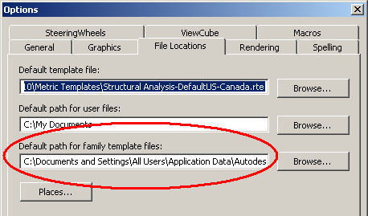

Default Family Template Path
Question: Is any API exposed to read and write the default family template path? It is displayed under 'Default path for family template files' in the RAC 2010 options dialogue:

Answer: Unfortunately, there is currently no way to set the path in the options dialog at runtime through the Revit API. You can read it from the Revit.ini file, though. It is stored under the FamilyTemplatePath key in the [Directories] section.